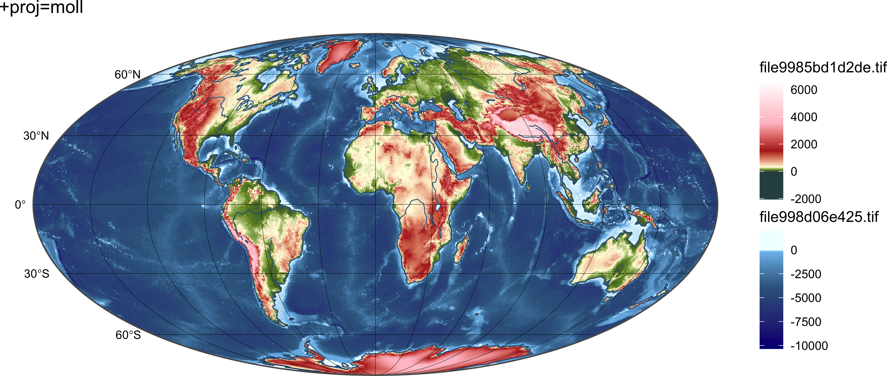
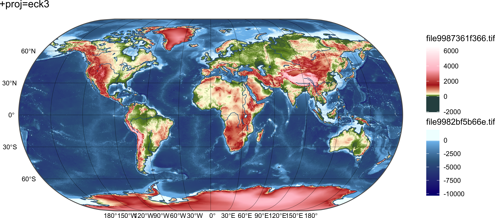
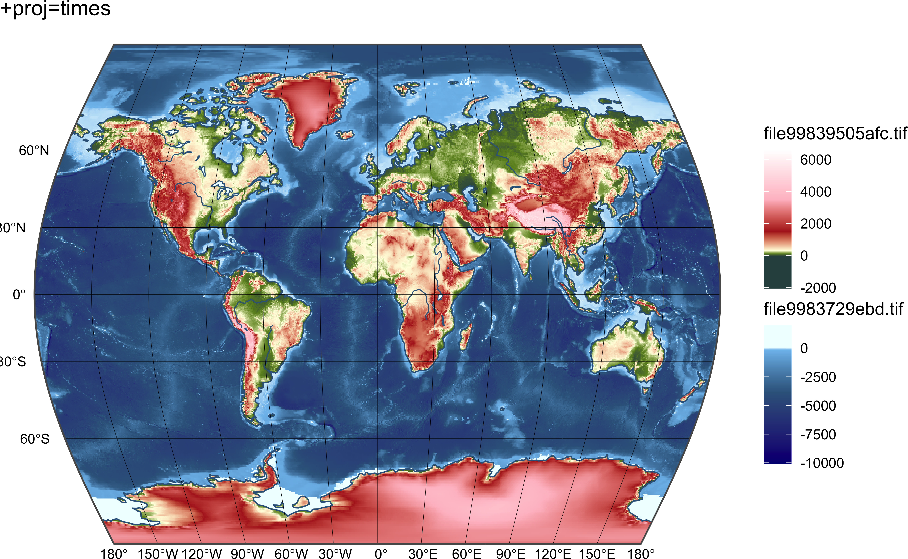
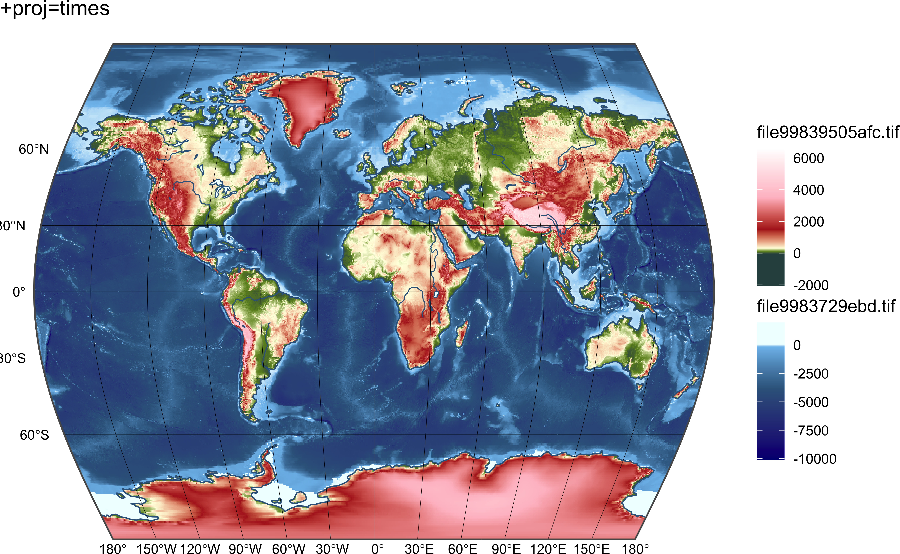
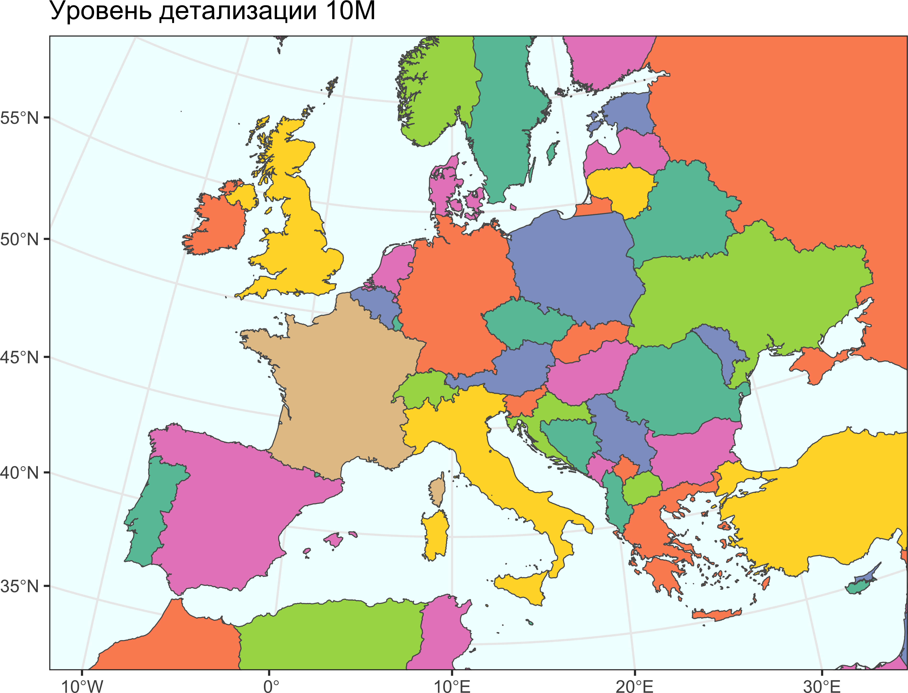
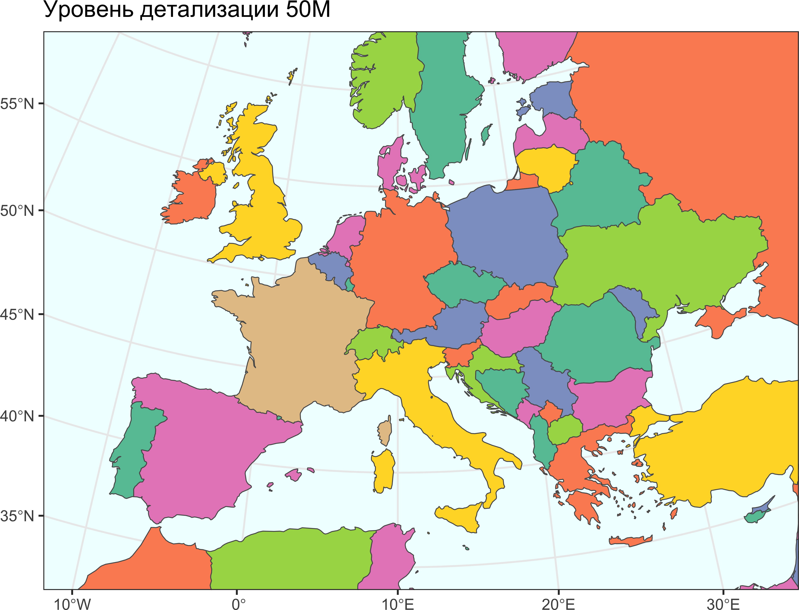
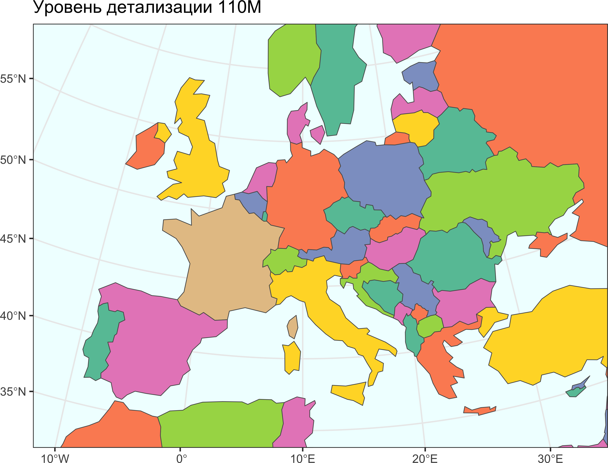

Глава 10 Основы картографии
10.2 Введение
В настоящей главе рассматриваются общие принципы автоматизированного построения карт. Картографическая визуализация базируется на комплексе аспектов, таких как:
- содержание карты;
- охват и масштаб/размер карты;
- картографическая основа;
- генерализация;
- проекция;
- градусная сетка;
- оформление данных;
- легенда;
- компоновка.
При этом многие компоненты неразрывно связаны друг с другом. Например, картографическая основа должна обладать оптимальной детализацией. То есть не быть излишне подробной или, наоборот, генерализованной для выбранного масштаба картографирования. Проекция, в свою очередь, влияет не величину масштаба при фиксированном размере карты, а легенда должны отражать выбранное содержание карты.
В настоящей теме кратко рассмотрены все перечисленные аспекты. В качестве библиотеки для визуализации используется ggplot2. Как и в случае с построением обычных графиков, использование данной библиотеки позволяет достичь гораздо лучшего по сравнению с базовой графикой R контроля над внешним видом изображения. Что позволяет в свою очередь достичь выского качества карт.
10.3 Данные Natural Earth
В качестве источника открытых данных мы будем использовать Natural Earth и WorldClim.
Natural Earth — это открытые мелкомасштабные картографические данные высокого качества. Данные доступны для трех масштабов: 1:10М, 1:50М и 1:110М. Для доступа к этим данным из среды R без загрузки исходных файлов можно использовать пакет rnaturalearth. Пакет позволяет выгружать данные из внешнего репозитория, а также содержит три предзакачанных слоя:
-
ne_countries()границы стран -
ne_states()границы единиц АТД 1 порядка -
ne_coastline()береговая линия
Для загрузки других слоев необходимо использовать функцию ne_download(), передав ей масштаб, название слоя и его категорию. Для начала мы поработаем с данными масштаба 110 млн:
countries = ne_countries(scale = 110, returnclass = 'sf')
coast = ne_coastline(scale = 110, returnclass = 'sf')
ocean = ne_download(scale = 110,
type = 'ocean',
category = 'physical',
returnclass = 'sf')
## OGR data source with driver: ESRI Shapefile
## Source: "/private/var/folders/5s/rkxr4m8j24569d_p6nj9ld200000gn/T/Rtmp3LaFOh", layer: "ne_110m_ocean"
## with 2 features
## It has 3 fields
cities = ne_download(scale = 110,
type = 'populated_places',
category = 'cultural',
returnclass = 'sf')
## OGR data source with driver: ESRI Shapefile
## Source: "/private/var/folders/5s/rkxr4m8j24569d_p6nj9ld200000gn/T/Rtmp3LaFOh", layer: "ne_110m_populated_places"
## with 243 features
## It has 119 fields
## Integer64 fields read as strings: wof_id ne_idВ то же время, каждый раз выкачивать данные для работы бывает неэффективно. Поэтому вы можете скачать себе полную базу данных Natural Earth в формате GeoPackage (GPKG) по ссылке https://www.naturalearthdata.com/downloads/ и положить ее в любую удобную локацию. В этом случае общение с интернетом в процессе построения карт не потребуется:
ne = '/Volumes/Data/Spatial/Natural Earth/natural_earth_vector.gpkg'
rivers = st_read(ne, 'ne_110m_rivers_lake_centerlines')
## Reading layer `ne_110m_rivers_lake_centerlines' from data source
## `/Volumes/Data/Spatial/Natural Earth/natural_earth_vector.gpkg'
## using driver `GPKG'
## Simple feature collection with 13 features and 31 fields
## Geometry type: LINESTRING
## Dimension: XY
## Bounding box: xmin: -135.3134 ymin: -33.99358 xmax: 129.956 ymax: 72.90651
## Geodetic CRS: WGS 84
lakes = st_read(ne, 'ne_110m_lakes')
## Reading layer `ne_110m_lakes' from data source
## `/Volumes/Data/Spatial/Natural Earth/natural_earth_vector.gpkg'
## using driver `GPKG'
## Simple feature collection with 25 features and 33 fields
## Geometry type: POLYGON
## Dimension: XY
## Bounding box: xmin: -124.9536 ymin: -16.53641 xmax: 109.9298 ymax: 66.9693
## Geodetic CRS: WGS 84
land = st_read(ne, 'ne_110m_land')
## Reading layer `ne_110m_land' from data source
## `/Volumes/Data/Spatial/Natural Earth/natural_earth_vector.gpkg'
## using driver `GPKG'
## Simple feature collection with 127 features and 3 fields
## Geometry type: POLYGON
## Dimension: XY
## Bounding box: xmin: -180 ymin: -90 xmax: 180 ymax: 83.64513
## Geodetic CRS: WGS 84
borders = st_read(ne, 'ne_110m_admin_0_boundary_lines_land')
## Reading layer `ne_110m_admin_0_boundary_lines_land' from data source
## `/Volumes/Data/Spatial/Natural Earth/natural_earth_vector.gpkg'
## using driver `GPKG'
## Simple feature collection with 186 features and 5 fields
## Geometry type: LINESTRING
## Dimension: XY
## Bounding box: xmin: -140.9978 ymin: -54.89681 xmax: 141.0339 ymax: 70.16419
## Geodetic CRS: WGS 84В дальнейшем нам понадобятся данные другой детализации, поэтому объединим текущие данные в список, соответствующий масштабу 110М. Для этого используем функцию lst из пакета tibble, которая элементам списка дает такие же имена как объединяемым элементам:
lyr110 = lst(ocean, land, coast, countries,
rivers, lakes, cities, borders)10.4 Визуализация средствами ggplot2
Пространственные данные поддерживаются в графической подсистеме ggplot2. Для этого существует несколько специализированных функций:
-
geom_sf()вызываетstat_sf()иcoord_sf()чтобы отобразить объекты типаsfв нужной системе координат; -
geom_stars()отображает объекты типаstars; -
coord_sf()обеспечивает поддержку картографических проекций и позволяет отображать данные в нужной системе координат на лету; -
stat_sf()отвечает за отображение переменных данных на графические переменные для пространственных данных; -
geom_sf_label()позволяет отображать подписи объектов на плашке; -
geom_sf_text()позволяет размещать подписи объектов без плашки.
Создадим на основе прочитанных данных простую карту мира. Будем конструировать карту последовательно, обсуждая что необходимо в ней поменять, чтобы она стала лучше. Для начала просто покажем страны:
ggplot() +
geom_sf(data = lyr110$countries) +
theme_void()
Можно обратить внимание на то, что когда вы отображаете страны полигонами с заливкой, на карте появляются несуществующие границы: на южном полюсе (Антарктида) и вдоль 180-го меридана (на Чукотке). Чтобы такого не происходило, страны всегда визуализируют в 2 слоя: полигонами без обводки и линейными границами поверх:
ggplot() +
geom_sf(data = lyr110$countries, color = NA) +
geom_sf(data = lyr110$borders, size = 0.2) +
theme_void()
Убрав обводку стран, мы потеряли береговую линию. Будет логично добавить на карту океан. Однако если отобразить его полигоном с обводкой, как мы попытались изначально поступить при визуализации стран, по границе карты возникнут несуществующие береговые линии:
ggplot() +
geom_sf(data = lyr110$countries, color = NA) +
geom_sf(data = lyr110$borders, size = 0.2) +
geom_sf(data = lyr110$ocean, size = 0.4,
fill = 'azure', color = 'steelblue') +
theme_void()Это означает, что для отображения морских акваторий следует использовать аналогичный прием совмещения полигональных объектов без обводки и их линейной границы:
ggplot() +
geom_sf(data = lyr110$countries, color = NA) +
geom_sf(data = lyr110$borders, size = 0.2) +
geom_sf(data = lyr110$ocean,
fill = 'azure', color = NA) +
geom_sf(data = lyr110$coast,
size = 0.4, color = 'steelblue') +
theme_void()
Добавим раскраску стран по их политической принадлежности. При отображении пространственных данных действуют принципы задания графических переменных, аналогичные построению обычных графиков: через mapping = aes(...). Воспользуемся готовым атрибутивным полем в таблице данных для создания политико-административной раскраски:
ggplot() +
geom_sf(data = lyr110$countries, color = NA,
mapping = aes(fill = as.factor(mapcolor7)), show.legend = FALSE) +
scale_fill_manual(values = brewer.pal(7, 'Set2')) +
geom_sf(data = lyr110$borders, size = 0.2) +
geom_sf(data = lyr110$ocean, fill = 'azure', color = NA) +
geom_sf(data = lyr110$coast, size = 0.4, color = 'steelblue4') +
theme_void()
Нанесем на карту точки и подписи крупнейших столиц. Для нанесения подписей используем geom_sf_text() с параметром nudge_y, чтобы сдвинуть подписи вверх относительно пунсонов. Помимо этого, чтобы понизить многословность кода, для дальнейших экспериментов перенесем посторяющиеся слои вы список:
lyr110$megacities = lyr110$cities |>
filter(SCALERANK == 0,
! NAME %in% c('Washington, D.C.', 'Paris', 'Riyadh', 'Rome', 'São Paulo', 'Kolkata'))
basemap = list(
geom_sf(data = lyr110$countries, color = NA,
mapping = aes(fill = as.factor(mapcolor7)), show.legend = FALSE),
scale_fill_manual(values = brewer.pal(7, 'Set2')),
geom_sf(data = lyr110$borders, size = 0.2),
geom_sf(data = lyr110$ocean, fill = 'azure', color = NA),
geom_sf(data = lyr110$coast, size = 0.4, color = 'steelblue4'),
geom_sf(data = lyr110$megacities, shape = 21, fill = 'white', stroke = 0.75, size = 2)
)
ggplot() +
basemap +
geom_sf_text(data = lyr110$megacities, mapping = aes(label = name_en),
size = 3, nudge_y = 5, family = 'Open Sans', fontface = 'bold') +
theme_void()С подписями точечных объектов, однако, более удобно работать с применением пакета ggrepel, который расставляет их автоматически вокруг точек:
ggplot() +
basemap +
geom_text_repel(data = lyr110$megacities, stat = "sf_coordinates",
size = 3, aes(label = NAME, geometry = geometry),
family = 'Open Sans', fontface = 'bold') +
theme_void()
В данном случае все неплохо, но подписи читаются недостаточно хорошо из-за контраста с фоном и береговой линией. Для улучшения читаемости можно сделать заливку стран менее насыщенной, увеличив прозрачность. При этом надо и обводку для точек сделать менее контрастной, чтобы она не выделялась на фоне стран — все-таки, на общегеографических и политико-административных картах равнозначны:
basemap0 = list(
geom_sf(data = lyr110$countries, color = NA,
alpha = 0.5,
mapping = aes(fill = as.factor(mapcolor7)), show.legend = FALSE),
scale_fill_manual(values = brewer.pal(7, 'Set2')),
geom_sf(data = lyr110$borders, alpha = 0.5, size = 0.2),
geom_sf(data = lyr110$ocean, fill = 'azure', color = NA),
geom_sf(data = lyr110$coast, alpha = 0.5, size = 0.4, color = 'steelblue4'),
geom_sf(data = lyr110$megacities, shape = 21, fill = 'white', stroke = 0.75, size = 2)
)
ggplot() +
basemap0 +
geom_text_repel(data = lyr110$megacities, stat = "sf_coordinates",
size = 3, aes(label = NAME, geometry = geometry),
family = 'Open Sans', fontface = 'bold') +
theme_void()
В качестве альтернативного решения можно добавить лекий полупрозрачный фон под подписями городов. Для этого нужно изменить геометрию с geom_text_repel на geom_label_repel и определить цвет заливки фона:
ggplot() +
basemap +
geom_label_repel(data = lyr110$megacities, stat = "sf_coordinates",
aes(label = NAME, geometry = geometry),
size = 3,
label.size = NA,
label.padding=.1,
fill = alpha("white", 0.7),
family = 'Open Sans', fontface = 'bold') +
theme_void()
10.5 Проекции и градусные сетки
Когда вы отображаете данные в градусах, не определяя проекцию, они визуализируются в цилиндрической равнопромежуточной проекции. Такая проекция не очень удобна для визуализации земного шара. Запишем исходную карту без проекции в отдельную переменную и визуализируем ее с помощью разных проекций:
map = ggplot() +
geom_sf(data = lyr110$countries, color = NA,
mapping = aes(fill = as.factor(mapcolor7)), show.legend = FALSE) +
scale_fill_manual(values = brewer.pal(7, 'Set2')) +
geom_sf(data = lyr110$borders, size = 0.2) +
geom_sf(data = lyr110$ocean, fill = 'azure', color = NA) +
geom_sf(data = st_wrap_dateline(lyr110$coast), size = 0.4, color = 'steelblue4') +
geom_sf(data = lyr110$megacities, shape = 21, fill = 'white', stroke = 0.75, size = 2) +
geom_label_repel(
data = lyr110$megacities, stat = "sf_coordinates",
aes(label = NAME, geometry = geometry),
size = 3,
label.size = NA,
label.padding=.1,
fill = alpha("white", 0.7),
family = 'Open Sans', fontface = 'bold'
) +
labs(x = NULL, y = NULL) +
theme_minimal()
map + coord_sf(crs = "+proj=moll")
map + coord_sf(crs = "+proj=eck3")
map + coord_sf(crs = "+proj=eqearth")
map + coord_sf(crs = "+proj=times")
map + coord_sf(crs = "+proj=mill")
lons = seq(-180, 180, by = 30)
lats = seq(-90, 90, by = 30)
grat = st_graticule(lon = lons, lat = lats)
box = st_bbox(c(xmin = -180, xmax = 180, ymax = 90, ymin = -90), crs = st_crs(4326)) |>
st_as_sfc() |>
smoothr::densify(max_distance = 1)
degree_labels = function(grat, vjust, hjust, size, lon = T, lat = T) {
pts = grat |>
st_cast('POINT') |>
group_by(degree, type, degree_label) |>
filter(row_number() == 1)
list(
if (lon) geom_sf_text(data = filter(pts, type == 'E'), vjust = vjust, size = size,
mapping = aes(label = degree_label), parse = TRUE),
if (lat) geom_sf_text(data = filter(pts, type == 'N'), hjust = hjust, size = size,
mapping = aes(label = degree_label), parse = TRUE)
)
}
map +
geom_sf(data = grat, size = 0.1) +
geom_sf(data = box, size = 0.5, fill = NA) +
coord_sf(crs = "+proj=moll") +
degree_labels(grat, vjust = +1.5, hjust = +1.5, size = 3, lon = F)
map +
geom_sf(data = grat, size = 0.1) +
geom_sf(data = box, size = 0.5, fill = NA) +
coord_sf(crs = "+proj=eck3") +
degree_labels(grat, vjust = +1.5, hjust = +1.5, size = 3)
map +
geom_sf(data = grat, size = 0.1) +
geom_sf(data = box, size = 0.5, fill = NA) +
coord_sf(crs = "+proj=eqearth") +
degree_labels(grat, vjust = +1.5, hjust = +1.5, size = 3)
map +
geom_sf(data = grat, size = 0.1) +
geom_sf(data = box, size = 0.5, fill = NA) +
coord_sf(crs = "+proj=times") +
degree_labels(grat, vjust = +1.5, hjust = +1.5, size = 3)10.5.1 Отображение растровых данных
На общегеографических картах довольно часто присутствует изображение рельефа. Чтобы добавить его на карту, можно использовать специальный тип геометрии geom_stars:
dem = read_stars('data/world/gebco.tif') # Цифровая модель рельефа
ggplot() +
geom_stars(data = dem) +
geom_sf(data = lyr110$coast, size = 0.4, color = 'white') +
coord_sf() +
theme_void()Для начала попробуем раскрасить рельеф в традиционной цветовой шкале, и посмотреть как это будет выглядеть:
pal = c('navyblue', 'steelblue', 'azure', 'darkslategray', 'olivedrab', 'lightyellow', 'firebrick', 'pink', 'white')
# Вынесем повторяющиемя слои в отдельный список
hydro_lyrs = list(
geom_sf(data = lyr110$coast, size = 0.4, color = 'steelblue4'),
geom_sf(data = lyr110$rivers, size = 0.3, color = 'steelblue4'),
geom_sf(data = lyr110$lakes, size = 0.3, color = 'steelblue4', fill = 'azure')
)
ggplot() +
geom_stars(data = dem) +
scale_fill_gradientn(colours = pal) +
hydro_lyrs +
coord_sf() +
theme_void()
Видно, что по умолчаню цвета распределяются равномерно вдоль шкалы. Нам же необходимо ассоциировать их с конкретными высотами. Это можно сделать, определив в функции scale_fill_gradientn параметр values. Он принимает значения от 0 до 1 и указывает позицию цвета между минимумом и максимум. Чтобы сформировать такие позиции, необходимо сначала сделать гипсометрическую шкалу в метрах, а затем отмасштабировать ее на дипазон \([0, 1]\) посредством функции rescale из пакета scales:
val = c(min(dem[[1]]), -4000, -200, 0, 100, 300, 1000, 2500, max(dem[[1]])) |>
scales::rescale()
ggplot() +
geom_stars(data = dem) +
scale_fill_gradientn(colours = pal, values = val) +
hydro_lyrs +
coord_sf() +
theme_void()
На первый взгляд может показаться, что все в порядке, но есть 2 проблемы: - отрицательные высоты на суше закрашиваются таким же цветом, как и отрицательные высота на море - нет резкого перехода через отметку 0, при котором цвет должен меняться с голубого на темно-зеленый.
Чтобы убедиться в этом рассмотрим фрагмент карты подробнее, обратив внимание на Персидский залив, Каспийское и Черное моря:
anno = list(
annotate("rect", xmin = 45, xmax = 60, ymin = 22, ymax = 32,
color = 'white', size = 2, fill = NA),
annotate("rect", xmin = 45, xmax = 57, ymin = 35, ymax = 48,
color = 'white', size = 2, fill = NA),
annotate("rect", xmin = 26, xmax = 43, ymin = 40, ymax = 48,
color = 'white', size = 2, fill = NA)
)
ggplot() +
geom_stars(data = dem) +
scale_fill_gradientn(colours = pal, values = val) +
hydro_lyrs +
anno +
coord_sf(xlim = c(10, 75), ylim = c(20, 50)) +
theme_void()Чтобы не возникало такого эффекта, необходимо разделить цифровую модель рельефа на ldt: одна для суши, вторая для мора. Для этого используем стандартный синтаксис вида stars[sf], который позволяет обрезать объект типа stars заданным объектом типа sf:
sf_use_s2(FALSE)
## Spherical geometry (s2) switched off
dem_land = dem[lyr110$land]
dem_ocean = dem[lyr110$ocean]
map = ggplot() +
geom_stars(data = dem_ocean) +
scale_fill_gradientn(
colours = c('navyblue', 'steelblue4', 'skyblue2', 'azure', 'azure'),
values = scales::rescale(
c(min(dem_ocean[[1]], na.rm = T),
-4000, -200, 0,
max(dem_ocean[[1]], na.rm = T))
),
na.value = NA
) +
new_scale_fill() +
geom_stars(data = dem_land) +
scale_fill_gradientn(
colours = c('darkslategray', 'darkslategray', 'olivedrab',
'lightyellow', 'firebrick', 'pink', 'white'),
values = scales::rescale(
c(min(dem_land[[1]], na.rm = T),
-50, 100, 300, 1500, 3500,
max(dem_land[[1]], na.rm = T)
)
),
na.value = NA
) +
hydro_lyrs +
coord_sf() +
theme_void()
map
Проверим ранее указанную область:

10.5.2 Проецирование растровых данных
В отличие от векторных данных, растровые необходимо трансформировать заранее в нужную проекцию. Для этого воспользуемся функцией st_warp:
hydro_lyrs = list(
geom_sf(data = st_wrap_dateline(lyr110$coast), size = 0.4, color = 'steelblue4'),
geom_sf(data = st_wrap_dateline(lyr110$rivers), size = 0.3, color = 'steelblue4'),
geom_sf(data = st_wrap_dateline(lyr110$lakes), size = 0.3, color = 'steelblue4', fill = 'azure')
)
prj = '+proj=eck3'
scale_ocean = scale_fill_gradientn(
colours = c('navyblue', 'steelblue4', 'skyblue2', 'azure', 'azure'),
values = scales::rescale(
c(min(dem_ocean[[1]], na.rm = T),
-4000, -200, 0,
max(dem_ocean[[1]], na.rm = T))
),
na.value = NA
)
scale_land = scale_fill_gradientn(
colours = c('darkslategray', 'darkslategray', 'olivedrab',
'lightyellow', 'firebrick', 'pink', 'white'),
values = scales::rescale(
c(min(dem_land[[1]], na.rm = T),
-50, 100, 300, 1500, 3500,
max(dem_land[[1]], na.rm = T)
)
),
na.value = NA
)
ggplot() +
geom_stars(data = st_warp(dem_ocean, crs = prj)) +
scale_ocean +
new_scale_fill() +
geom_stars(data = st_warp(dem_land, crs = prj)) +
scale_land +
hydro_lyrs +
coord_sf(crs = prj) +
theme_void()
Обратим внимание, что растро проецируется немного не так как векторные данные, его область остается прямоугольной. Поэтому при построении карт мира необходимо растры после проецирования обрезать прямоугольником, охватывающим весь мир:
prjs = c("+proj=moll", "+proj=eck3", "+proj=eqearth", "+proj=times")
lon_labs = c(F,T,T,T)
for (i in seq_along(prjs)) {
pbox = st_transform(box, prjs[i])
map = ggplot() +
geom_stars(data = st_warp(dem_ocean, crs = prjs[i])[pbox]) +
scale_ocean +
new_scale_fill() +
geom_stars(data = st_warp(dem_land, crs = prjs[i])[pbox]) +
scale_land +
hydro_lyrs +
geom_sf(data = grat, size = 0.1) +
geom_sf(data = box, size = 0.5, fill = NA) +
coord_sf(crs = prjs[i]) +
degree_labels(grat, vjust = +1.5, hjust = +1.5, size = 3, lon = lon_labs[i]) +
ggtitle(prjs[i]) +
theme_void()
print(map)
} 

10.6 Детализация данных
10.6.1 Выбор картографической основы
Один из обязательных признаков хорошей карты — это использование пространственных данных подходящей детализации. Избыточная детализация приводит к тому, что карта становится неопрятной, пестрит трудно воспринимаемыми деталями, производит непрофессиональное впечатление. Помимо этого, избыточная детализация данных приводит к тому, что карта будет медленно прорисовываться. Это справедливо как для карт, создаваемых программным путём, так и для карт, которые составляются в ГИС-пакетах. В некоторых случаях можно столкнуться с обратной ситуацией, когда данные менее детальны, чем это требуется для карты. В этом случае у пользователя карты будет складываться впечатление, что карта недостаточно точна и информативна.
Проблема детализации касается в основном картографической основы, поскольку подбирается она прежде всего в соответствии с охватом исследуемой территории и физическим размером итогового изображения. В случае если предполагается совмещение картографической основы и тематических данных, важным фактором будет также детализация самих тематических данных.
В качестве примера для выбора подходящей основы рассмотрим задачу построения карты Европы, которая бы вписывалась в размер страницы данной книги. База данных Natural Earth содержит 3 уровня детализации, из которых надо выбрать подходящий. Сравним их:
cnt010 = st_read(ne, 'ne_10m_admin_0_countries')
## Reading layer `ne_10m_admin_0_countries' from data source
## `/Volumes/Data/Spatial/Natural Earth/natural_earth_vector.gpkg'
## using driver `GPKG'
## Simple feature collection with 255 features and 94 fields
## Geometry type: MULTIPOLYGON
## Dimension: XY
## Bounding box: xmin: -180 ymin: -90 xmax: 180 ymax: 83.6341
## Geodetic CRS: WGS 84
cnt050 = st_read(ne, 'ne_50m_admin_0_countries')
## Reading layer `ne_50m_admin_0_countries' from data source
## `/Volumes/Data/Spatial/Natural Earth/natural_earth_vector.gpkg'
## using driver `GPKG'
## Simple feature collection with 241 features and 94 fields
## Geometry type: MULTIPOLYGON
## Dimension: XY
## Bounding box: xmin: -180 ymin: -89.99893 xmax: 180 ymax: 83.59961
## Geodetic CRS: WGS 84
cnt110 = st_read(ne, 'ne_110m_admin_0_countries')
## Reading layer `ne_110m_admin_0_countries' from data source
## `/Volumes/Data/Spatial/Natural Earth/natural_earth_vector.gpkg'
## using driver `GPKG'
## Simple feature collection with 177 features and 94 fields
## Geometry type: MULTIPOLYGON
## Dimension: XY
## Bounding box: xmin: -180 ymin: -90 xmax: 180 ymax: 83.64513
## Geodetic CRS: WGS 84
prj = '+proj=laea +lat_0=50 +lon_0=10'
box = st_bbox(c(xmin = -10, xmax = 33,
ymin = 33, ymax = 60),
crs = st_crs(4326)) |>
st_as_sfc() |>
st_transform(prj) |>
st_bbox()
cnts = list(cnt010, cnt050, cnt110)
scales = c(10, 50, 110)
for (i in seq_along(cnts)) {
print(
ggplot() +
geom_sf(data = cnts[[i]], size = 0.25,
mapping = aes(fill = as.factor(MAPCOLOR7)),
show.legend = FALSE) +
scale_fill_manual(values = brewer.pal(7, 'Set2')) +
coord_sf(crs = prj,
xlim = c(box[1], box[3]),
ylim = c(box[2], box[4])) +
theme_bw() +
theme(panel.background = element_rect(fill = 'azure')) +
ggtitle(glue::glue('Уровень детализации {scales[i]}M'))
)
}
Очевидно, что в данном случае оптимальным является средний уровень детализации 50M. Два других уровня при выбранном охвате территории и размере карты являются либо избыточно (10M), либо недостаточно (110M) детальными.
10.6.2 Генерализация картографической основы
Иногда не удается найти картографическую основу подходящей детализации. В этом случае вы можете провести генерализацию данных. Поскольку генерализация является достаточно ресурсоемкой процедурой, ее не следует проводить непосредственно в скрипте, который занимается построением карт. Вместо этого, необходимо вынести создание генерализованной картографической основы в отдельный скрипт. Наиболее часто в целях генерализации используются такие операции как геометрическое упрощение и отбор объектов. Следует, однако, помнить, что эти процедуры целесообразно выполнять после того как данные трансформированы в нужную проекцию. В противном случае генерализация может быть неравномерной по полю карты (один градус долготы соответствует меньшим расстояниям в близости полюсов). Помимо этого, будет сложно выполнять параметризацию алгоритмов генерализации.
10.6.2.1 Геометрическое упрощение
В качестве примера рассмотрим геометрическое упрощение рек и полигонов государств. Визуализируем для начала исходные данные:
countries = cnt010 |>
st_transform(prj) |>
st_crop(box)
ggplot() +
geom_sf(data = countries, size = 0.25) +
ggtitle('Исходные данные масштаба 10M') +
theme_minimal()
Невооруженным взглядом видно, что их детализация избыточна. Для геометрического упрощения воспользуемся функцией ms_simplify() из пакета rmapshaper. В данной функции доступно два алгоритма геометрического упрощения: Дугласа-Пейкера и Висвалингам-Уайатта. Принципы работы этих алгоритмов разные, поэтому сопоставимая детализация достиагается в них при разном количестве точек:
countries_dp = ms_simplify(countries,
method = 'dp', # алгоритм Дугласа-Пейкера
keep = 0.04) # оставить 4% точек
countries_vw = ms_simplify(countries,
method = 'vis', # алгоритм Висвалингам-Уайатта
keep = 0.06) # оставить 6% точек
ggplot() +
geom_sf(data = countries_dp, size = 0.25) +
ggtitle('Геометрическое упрощение алгоритмом Дугласа-Пейкера') +
theme_minimal()
ggplot() +
geom_sf(data = countries_vw, size = 0.25) +
ggtitle('Геометрическое упрощение алгоритмом Висвалингам-Уайатта') +
theme_minimal()
Видно, что результаты упрощения алгоритмом Дугласа-Пейкера довольно угловатые и неестественные. Но при этом он лучше сохраняет различные характерные точки в структуре линии типа вершин фьордов. Тем не менее для целей картографической генерализации алгоритм Висвалингам-Уайатта можно назвать предпочтительным.
10.6.2.2 Отбор
Отбор применятся внутри множества пространственных объектов для того чтобы уменьшить их количество. Наиболее просто реализуется отбор для объектов, которые не состоят в пространственных отношениях. Как правило, это точечные объекты. Более сложна процедура отбора во множестве топологически связанных объектов. Например, прореживание транспортной или гидрографической сети. В данном разделе мы посмотрим как можно отбирать точечные объекты. Наиболее простой случай реализуется тогда, когда объекты можно отобрать по атрибутам, без использования пространственных отношений. К счастью, данные Natural Earth содержат атрибуты, которые можно использовать в качестве критериев отбора.
Для начала попробуем нанести все населенные пункты:
cities_eu = st_read(ne, 'ne_10m_populated_places') |>
st_transform(prj) |>
st_crop(box)
## Reading layer `ne_10m_populated_places' from data source
## `/Volumes/Data/Spatial/Natural Earth/natural_earth_vector.gpkg'
## using driver `GPKG'
## Simple feature collection with 7343 features and 119 fields
## Geometry type: POINT
## Dimension: XY
## Bounding box: xmin: -179.59 ymin: -90 xmax: 179.3833 ymax: 82.48332
## Geodetic CRS: WGS 84
ggplot() +
geom_sf(data = countries_vw, size = 0.25) +
geom_sf(data = cities_eu, size = 0.5, color = 'darkviolet') +
geom_sf_text(data = cities_eu,
mapping = aes(label = NAME),
size = 1.5, nudge_y = 30000) +
theme_bw()
Очевидно, что при такой плотности нормальную карту составить не получится. Попробуем для начала остаить только столицы и разнести их через ggrepel:
capitals = filter(cities_eu, FEATURECLA == 'Admin-0 capital')
ggplot() +
geom_sf(data = countries_vw, size = 0.25) +
geom_sf(data = capitals, size = 1.2, color = 'darkviolet') +
geom_text_repel(data = capitals, stat = "sf_coordinates",
size = 2.5, aes(label = NAME, geometry = geom),
fontface = 'bold') +
theme_bw()Очевидно, на данную схему можно также дополнительнонанести дополнительно крупные населенные пункты, отобрав их уже по численности населения. Оставим для примера те, в которых живет более \(700 000\) жителей:
major_cities = cities_eu |>
filter((FEATURECLA == 'Admin-0 capital') | (POP_MIN >= 700000)) |>
mutate(FEATURECLA = ordered(FEATURECLA, levels = unique(cities_eu$FEATURECLA)))
ggplot() +
geom_sf(data = countries_vw, size = 0.25) +
geom_sf(data = major_cities, size = 1, mapping = aes(size = FEATURECLA)) +
geom_text_repel(data = major_cities, stat = "sf_coordinates",
aes(size = FEATURECLA, label = NAME, geometry = geom)) +
scale_size_manual(values = c(2, 2, 2, 2.5)) +
theme_bw()
10.9 Карты-врезки
10.9.2 Упражнения
- Используя возможности ggplot2, и данные Natural Earth масштаба 10M, создайте политико-административную и физическую карты Европы в конической проекции. Определите самостоятельно необходимые для этого слои. В качестве данных о рельефе для физической карты скачайте цифровую модель рельефа GEBCO, оптимизированную для отображения в соответствующих масштабах.
| Самсонов Т.Е. Визуализация и анализ географических данных на языке R. М.: Географический факультет МГУ, 2021. DOI: 10.5281/zenodo.901911 |